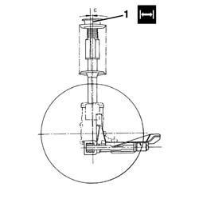

4450A20 FRONT WHEEL CASTER
- Path
- Procedures > 44 SUSPENSION AND WHEELS > 4450 WHEELS AND HUBS > 4450A WHEEL GEOMETRY > 4450A20 FRONT WHEEL CASTER
- Kind
- repair procedure (removal / refitting; the operation number is the code)
- Applies to
- all engines; all production periods
- Interactive page
- https://sloeber94.github.io/elrnDB-fDct/en/#/244001202
Applies to: all engines; all production periods
1. Check the wheel camber angle "e".
Subject | Value | |
|---|---|---|
1 | Caster angle "e" | 0° 30' ± 30' |
- The caster angle cannot be adjusted.
